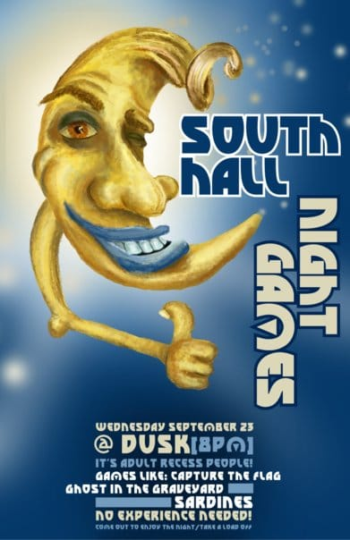

Game Night
Poster Design - UW-Stout
Game Night Poster Design
Game Night was an event put on by South Hall at UW-Stout. The student who requested the poster left the art direction very much in the air (as they usually do), so I took upon myself and my wacom tablet to just create a night themed backdrop to overlay the details of thevent. Nothing more to it really, but this Game Night poster became one of my favorites from all the wacom work I did at UW-Stout.


